La multiplicación
Terminamos con la multiplicación.
Recuerda que la multiplicación está siempre en relación con la suma, es por esto que podemos aprendernos las tablas de multiplicar sumando. Las tablas de multiplicar nos sirven para reconocer un el resultado de una suma grande de forma inmediata. Cuando te aprendes la secuencia de números de cada tabla de multiplicar te estas ahorrando muchos pasos, como por ejemplo tener que contar de número en número, o tener que sumar de número en número.
- ¿Que vamos a aprender en esta tercera parte?
- La relación entre la suma y la multiplicación
- Las tablas del 7, 8 y 9
(1)La relación entre la suma y la multiplicación
Como lo hemos visto en los anteriores post sobre la multiplicación, cuando trabajamos con una tabla de multiplicar estamos realmente trabajando con grupos dentro de los cuales hay el mismo número de elementos.
Vamos a verlo con la tabla del 7:
Observa:
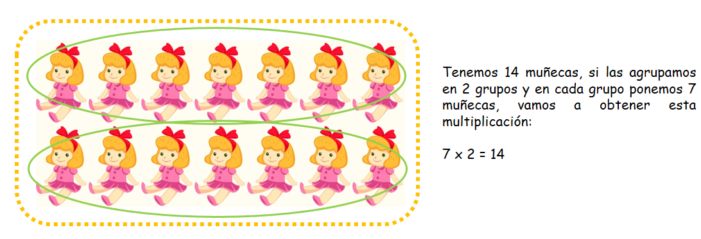 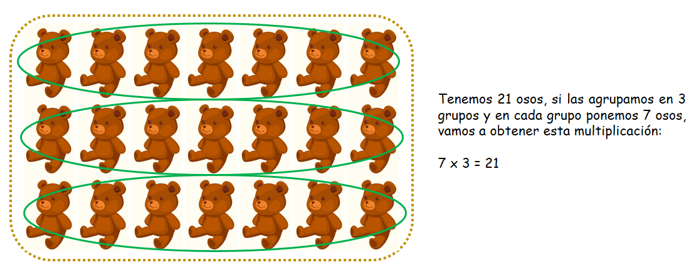 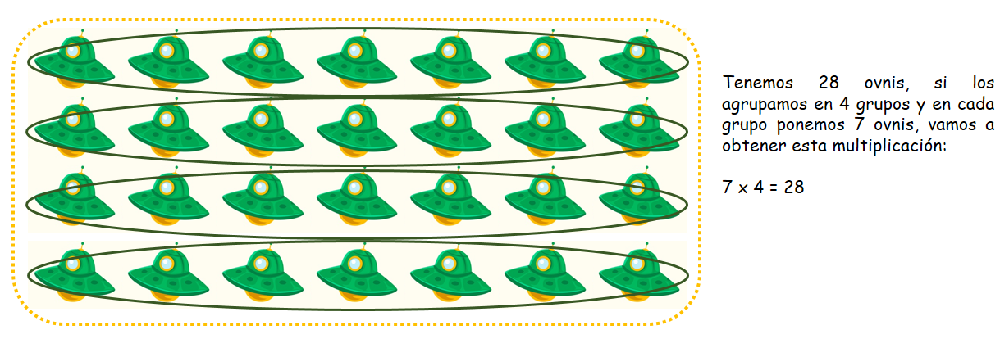Observa que la tabla del 7 nos ayuda a contar con grupos que tienen de a 7 elementos cada uno, de una forma más rápida podemos obtener el resultado si contamos de 7 en 7. Si cuentas la diferencia entre los resultados te darás cuenta que solo los separa 7 números, es decir aumentan de 7 en 7.
Ahora vamos a verlo con la tabla del 8:
Observa:
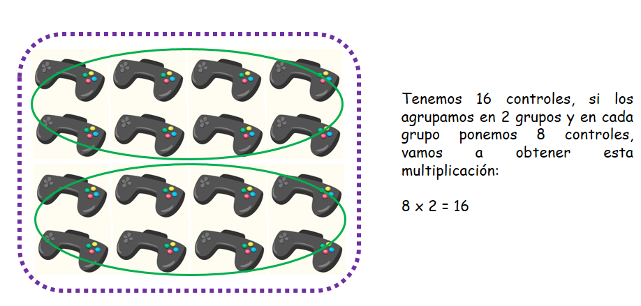 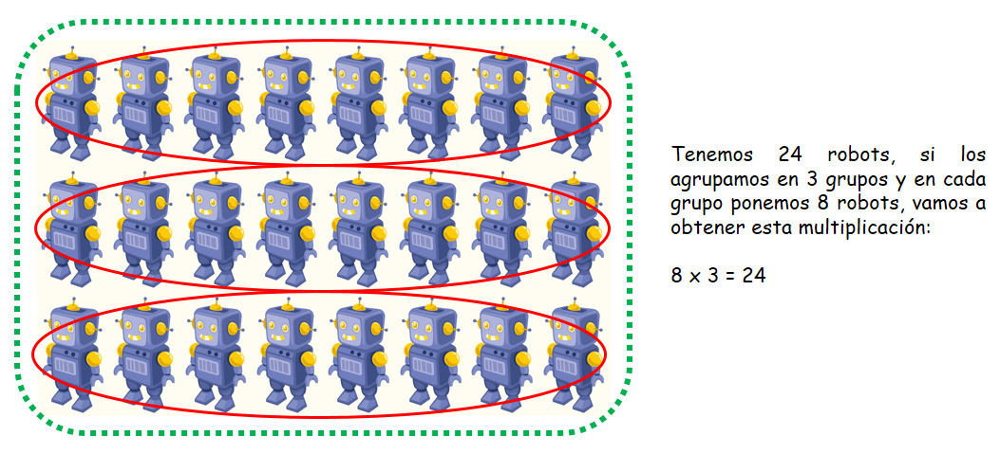 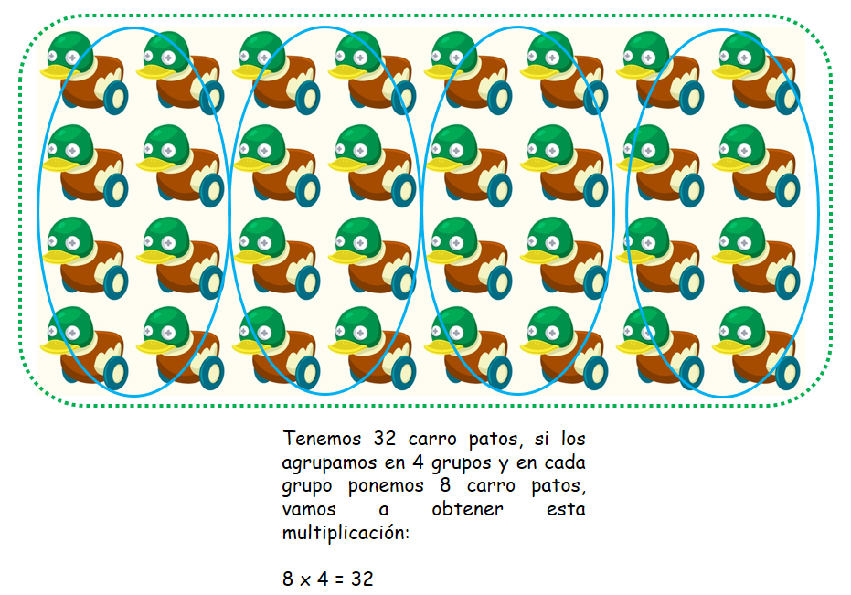Observa ahora que la tabla del 8, nos ofrece los resultados de sumas o conteos de 8 en 8. Es por esto que cuando trabajamos con la tabla del 8 estas trabajando con diferente número de grupos pero en cada grupo siempre tendrás 8 elementos.
Ahora vamos a verlo con la tabla del 9:
Observa:
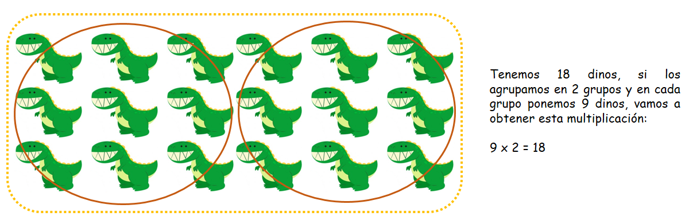 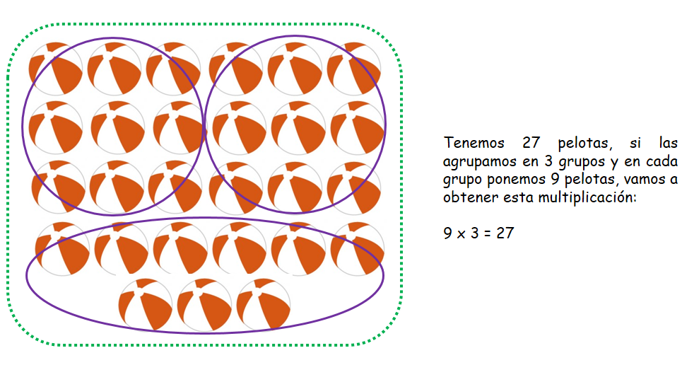 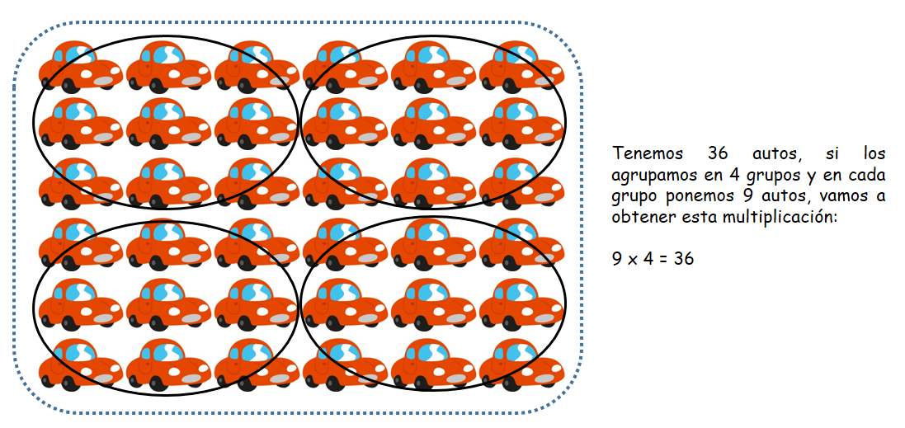Si observas bien, te darás cuenta que la tabla del 9 se conforma de un conteo de 9 en 9, y cada vez que trabajas con esta tabla estas sumando grupos que contienen 9 elementos.
(2)Las tablas de multiplicar del 7 al 9:
A. La tabla del 7:
Tip: Para aprenderte los resultados de la tabla del 7 solo debes contar de 7 en 7.
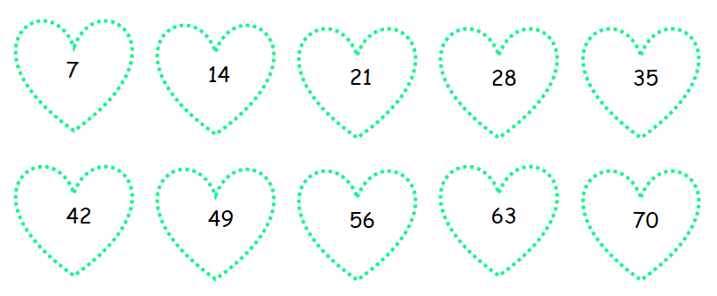 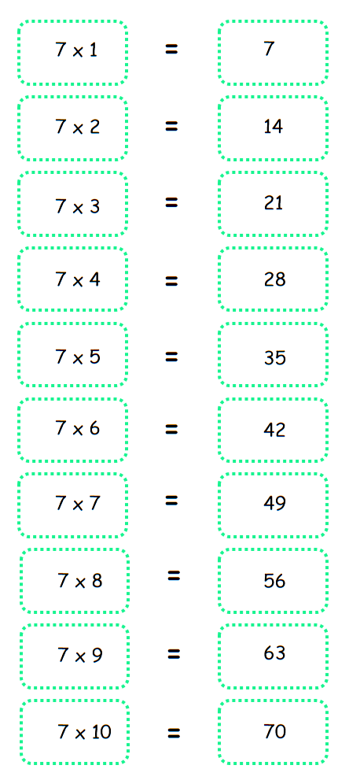B. La tabla del 8:
Tip: Para aprenderte los resultados de la tabla del 8 solo debes contar de 8 en 8.
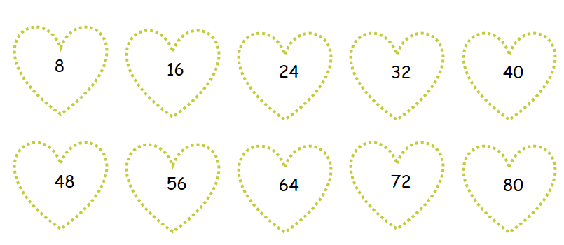 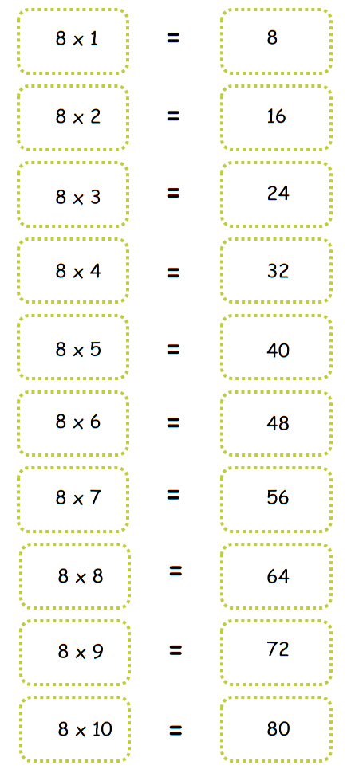B. La tabla del 9:
Tip: Para aprenderte los resultados de la tabla del 9 solo tienes que contar de 9 en 9.
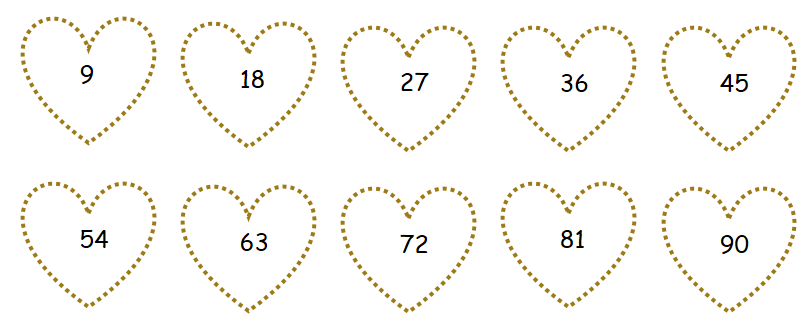 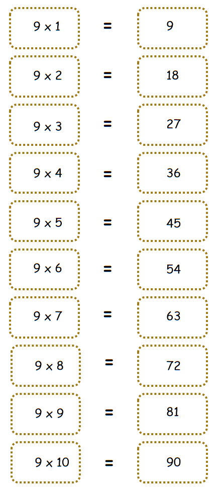Material extra para trabajar el tema de la multiplicación:
En este enlace podrás descargar un cuadernillo de trabajo sobre las tablas de multiplicar con múltiples ejercicios creado por Educacionmaestros.com.
Dando click en este enlace encontrarás una página llena de fichas para descargar gratis sobre las tablas del 1 al 10 creado por Tablasdemultiplicar.com.
Pinchando aquí hallarás juegos virtuales en los cuales podrás practicar las tablas de multiplicar creado por Tablasdemultiplicar.com.
Vídeo orientativo:
En estos vídeos encontrarás un explicación fácil y divertida sobre trucos para aprenderse las tablas: la tabla del 7, la tabla del 8 y la tabla del 9 creado por Guíainfantil.com.